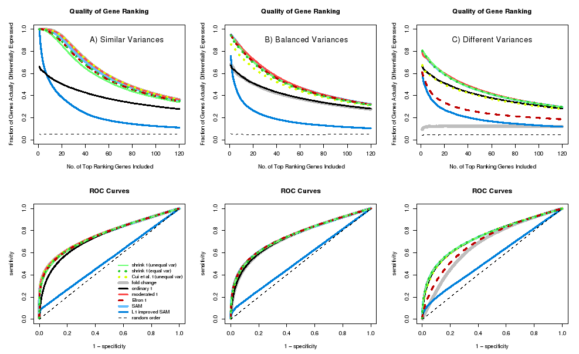

This package implements the "shrinkage t" statistic introduced in Opgen-Rhein and Strimmer (2007) and a shrinkage estimate of the "correlation-adjusted t-score" (CAT score) described in Zuber and Strimmer (2009). It also offers a convenient interface to a number of other regularized t-statistics commonly employed in high-dimensional case-control studies.
Current Version: 1.2.5
Authors: Rainer Opgen-Rhein, Verena Zuber, and Korbinian Strimmer.
Documentation and Installation:
Quick install: enter at the R console: install.packages("st")- Manual (pdf file) and release history.
- Download of st version 1.2.5 source package.
- Archive of previous versions of st.
- Licensed under the GNU GPL version 3 (or any later version).
Additional Information:
For classification see the related "sda" package.- The shrinkage t statistic compared to a number of other regularized t-type
statistics, in terms of quality of ranking and ROC curves (from Opgen-Rhein and Strimmer 2007):
 - SUMMARY:
If variances across genes are similar (left column), fold-change-type statistics work best. Conversely, if variances are heterogeneous (right column), t-type statistics perform best. - Regularized t-scores can automatically adapt to the variance scenario at hand. "shrinkage t", "SAM", and "moderated t" are the only three consistently top-performing test statistics.
- For metric response the corresponding statistic is the CAR score - see the "care" package for details. The shrinkage CAT score ("correlation-adjusted t score") is a decorrelated version of the "shrinkage t score", and estimates the contribution of each individual gene in separating the two groups, after removing the effect of all other genes.
Relevant Papers:
- R. Opgen-Rhein and K. Strimmer. 2007. Accurate ranking of differentially expressed genes by a distribution-free shrinkage approach. Statist. Appl. Genet. Mol. Biol. 6: 9.
- V. Zuber and K. Strimmer. 2009. Gene ranking and biomarker discovery under correlation. Bioinformatics 25: 2700-2707. ( arXiv:0902.0751)